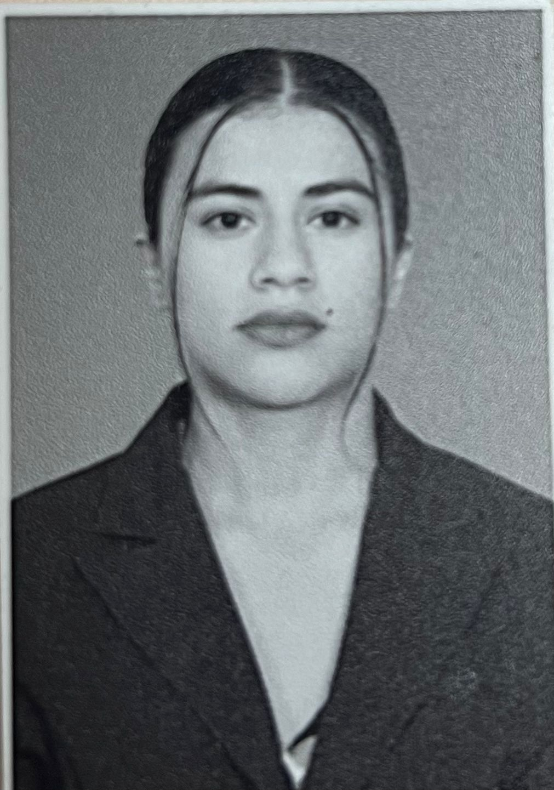
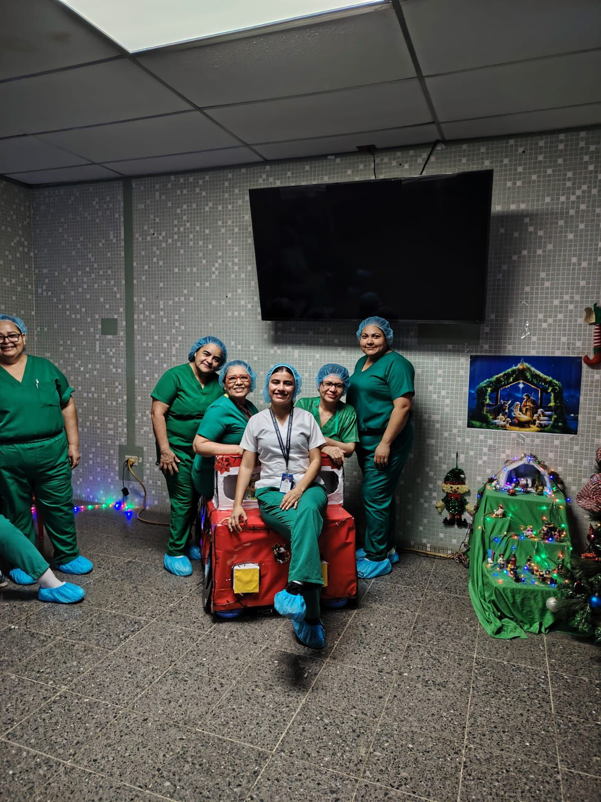
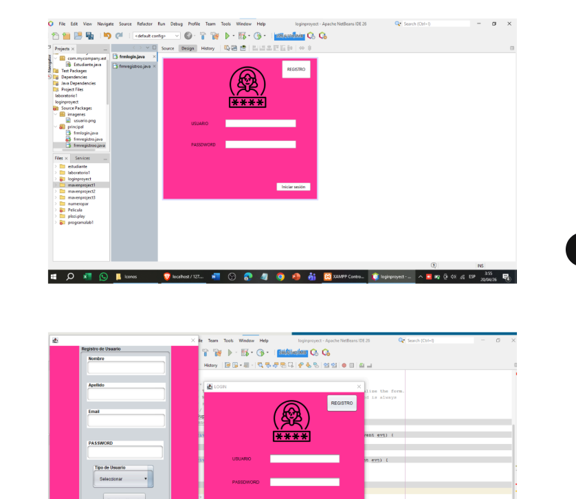
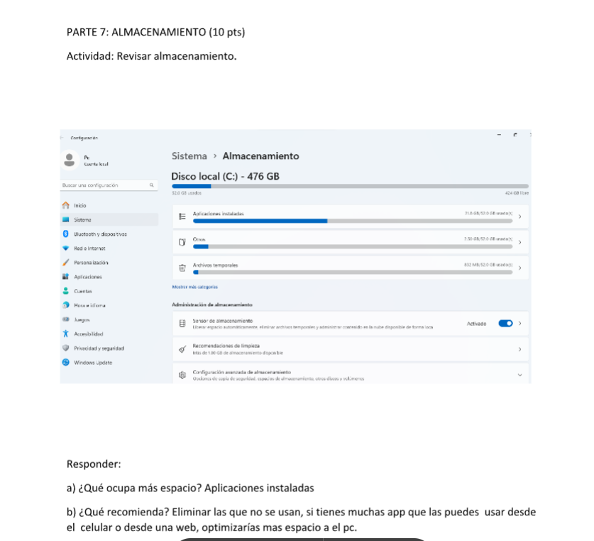

Mónica Lourdes Ventura Mejía
Estudiante de Licenciatura en Informática · Área Administrativa Hospitalaria
Perfil
Sobre mí
Soy Mónica Ventura, estudiante de Licenciatura en Informática con experiencia laboral en el área administrativa de un centro quirúrgico. Me caracterizo por ser responsable, organizada y por mantener una actitud de mejora continua. Poseo habilidades en manejo de información, trabajo en equipo y adaptación a entornos exigentes, lo que me ha permitido fortalecer tanto mis capacidades técnicas como personales.
Objetivo
Objetivo profesional
Trayectoria
Experiencia profesional
Área Administrativa · Dos roles desempeñados
Rol 1 — Auxiliar de Estadísticas y Documentos Médicos
- Digitación de ingresos y egresos de pacientes
- Registro y actualización de expedientes clínicos
- Organización y control de documentación médica
Rol 2 — Apoyo Administrativo en Quirófano
- Programación diaria de cirugías especializadas
- Coordinación de actividades administrativas del área
- Uso de herramientas informáticas para el control de datos
- Apoyo a procesos internos del área quirúrgica


Historia
Línea de tiempo de formación
2000 – 2012
Niñez y educación primaria
Desarrollo de habilidades sociales, creatividad y trabajo en equipo.
2013 – 2015
Bachillerato
Etapa de aprendizaje personal y social, primer contacto con herramientas tecnológicas.
2020 – 2026
Experiencia laboral — Centro Quirúrgico
Trabajo en área administrativa hospitalaria: manejo de expedientes, programación de cirugías y control de datos con herramientas informáticas.
2025 – presente
Licenciatura en Informática
Inicio de formación universitaria en informática. Materias cursadas: Bases de Datos I y II, Programación, Sistemas Operativos.
Academia
Trabajos académicos
Modelado entidad-relación
Diseño de diagramas ER aplicados a casos reales. Identificación de entidades, atributos y relaciones.

Proyectos de programación
Desarrollo de ejercicios y proyectos aplicando lógica de programación y resolución de problemas.

Prácticas de sistemas
Exploración de conceptos de sistemas operativos, gestión de procesos y manejo de entornos.

Competencias
Habilidades y herramientas
Gestión documental
Avanzado
Trabajo en equipo
Avanzado
Organización
Avanzado
Microsoft Excel
Intermedio
Bases de datos
En formación
Programación
En formación